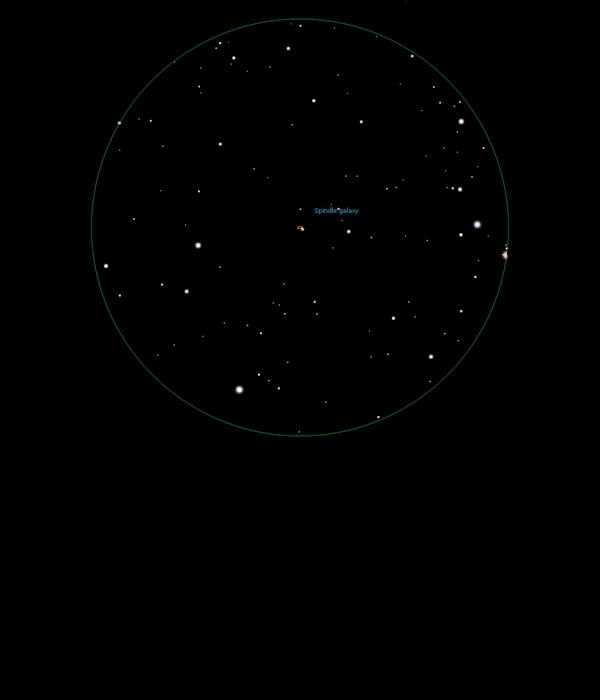

NGC 3115
Lenticular Galaxy in Sextans
NGC 3115
Mag 9.9
The Spindle Galaxy, Caldwell 53
15/01/16
Very low down but surprisingly easy to locate once the
parallelogram of four stars HIP 49550, Mag 7.65, HIP 49633,
Mag 6.60 and two stars of Mags 9.0 and 9.55 have been located
Very distinct elongation in 12mm and actually quite bright